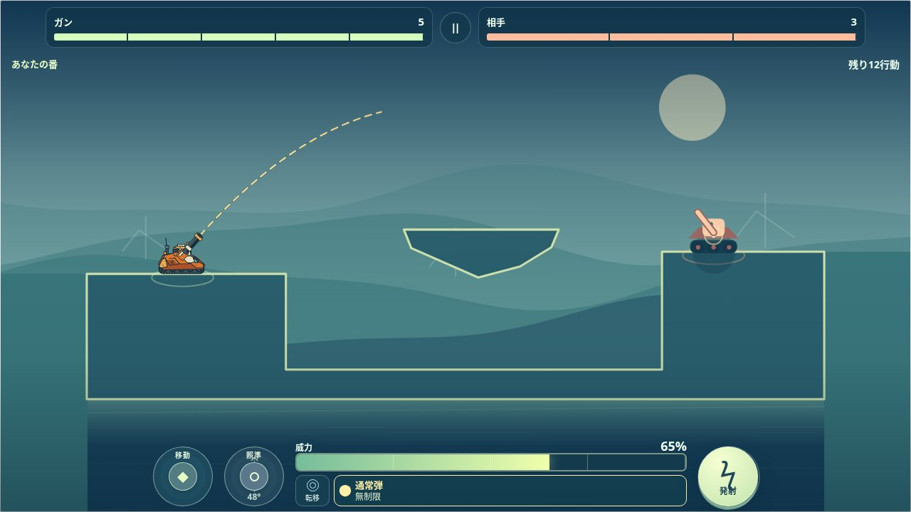
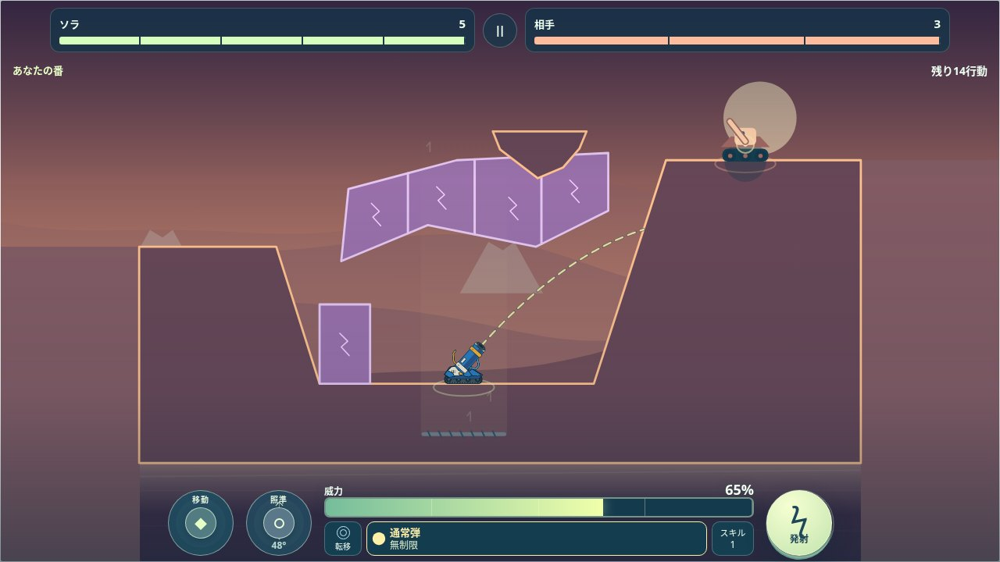
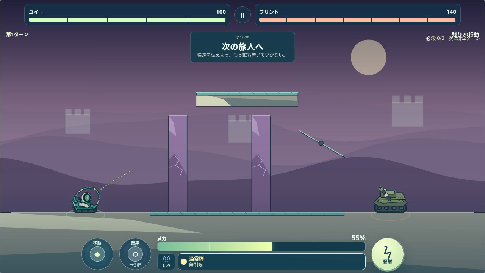
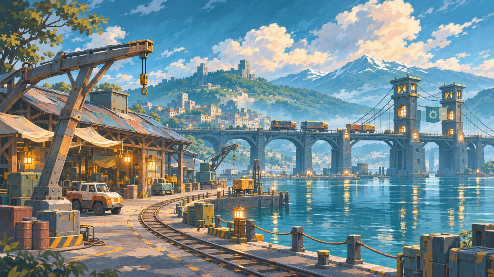
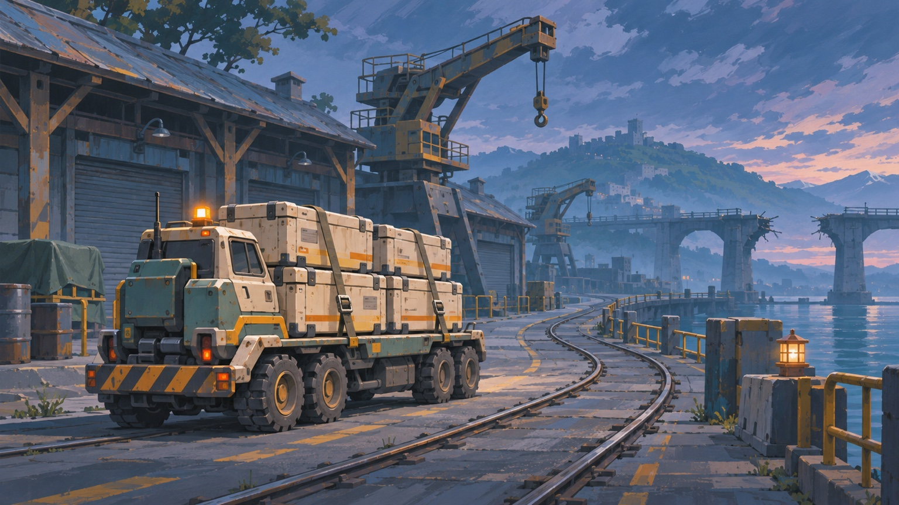
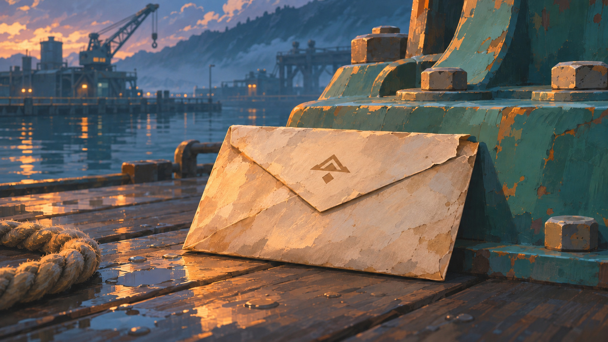

位置と角度を合わせる
左側の移動・照準スティックで調整。チャージ中も動かせます。
A TACTICAL ARCADE ADVENTURE
狙う。ためる。地形を味方にする。
ひとつの弾道から、攻略が変わる。
01 / THE PLAY
角度と威力を合わせて、一手ずつ。届かない場所にも、きっと道はある。
02 / A BIGGER HORIZON
山を越え、洞窟を抜け、風や磁場を読む。20のテーマ、100の戦場で、自分なりの攻略を見つけよう。



03 / THE MACHINES
重戦車、六輪ローバー、作業重機。固有の通常弾と必殺弾を持つ、10機の相棒。
重装アサルトタンク
重い一撃で、道をつくる。
通常戦の必殺は自分の第2・4・6ターンに1発ずつ。中ボス・大ボスは最初から3発。仲間を変えても残数は共通。
THE JOURNEY / STORY PREVIEW
「道が開いたら、また会おう。」ガンは返事を届けるために旅立つ。道を修復し、仲間と出会い、止まった守り手の役目を取り戻していく。物語の答えは、100面の先に。



ARCLINE / OUR WORLD
港から山へ、地下から空へ。アークラインは荷物も連絡も運び、離れた町を結ぶ輸送路でした。大分断の日に道は途切れ、返事は届かなくなります。安全のために路線を止めた守り手たちは、今も最後の規則を守り続けています。
止まった港で、ガンが拾った一通の便り。「道が開いたら、また会おう。」一機から始まる旅は、道標を直すハナ、荷を届けるコロ、それぞれの願いを持つ仲間との冒険へ。守り手を本来の仕事へ戻し、もう一度、道をつなぎましょう。
04 / YOUR FIRST SHOT
左手で位置と角度。右手で発射。最初のプレビューを見たら、あなたの番。
左側の移動・照準スティックで調整。チャージ中も動かせます。
右の発射ボタンを押し続けて、飛ばす強さを合わせます。
地形と弾道を見ながら、次の一手を考えましょう。
PCでも、同じ一射を。矢印キーで移動・照準、スペース長押しで発射。
YOUR NEXT HORIZON